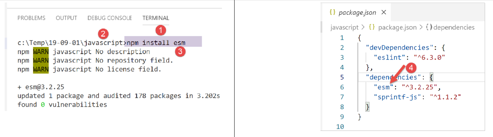

6. Zeichenketten
JavaScript-Zeichenketten sind denen in PHP sehr ähnlich.

6.1. Skript [str-01]
Zunächst muss man verstehen, dass eine Zeichenkette, sobald sie erstellt wurde, nicht mehr geändert werden kann. Es gibt viele Methoden, um aus der ursprünglichen Zeichenkette eine neue zu erstellen, aber die ursprüngliche Zeichenkette bleibt unverändert. Außerdem kann eine Zeichenkette zwei Typen haben:
- [string], wenn er mit einem String-Literal initialisiert wird;
- [object], wenn er als Instanz der Klasse [String] erstellt wird;
'use strict';
// strings are read-only (cannot be modified)
// a chain
const chaîne1 = "abcd ";
// type
console.log("typeof(chaîne1)=", typeof (chaîne1));
// character n° 2
console.log("chaîne1[2]=", chaîne1[2]);
// causes an error
chaîne1[2] = "0";
Ausführung
[Running] C:\myprograms\laragon-lite\bin\nodejs\node-v10\node.exe -r esm "c:\Temp\19-09-01\javascript\strings\str-01.js"
typeof(chaîne1)= string
chaîne1[2]= c
c:\Temp\19-09-01\javascript\strings\str-01.js:1
TypeError: Cannot assign to read only property '2' of string 'abcd '
at Object.<anonymous> (c:\Temp\19-09-01\javascript\strings\str-01.js:12:12)
at Generator.next (<anonymous>)
6.2. Skript [str-02]
Dieses Skript zeigt, dass eine Zeichenkette auf zwei Arten erstellt werden kann.
'use strict';
// strings can be of two types
// a literal string
const chaîne1 = "abcd ";
// type
console.log("typeof(chaîne1)=", typeof (chaîne1));
// string instance
const chaîne2 = new String("xyzt");
// type
console.log("typeof(chaîne2)=", typeof (chaîne2));
// other entry (without new) - type [string] not [object]
const chaîne3 = String("12 34");
// type
console.log("typeof(chaîne3)=", typeof (chaîne3));
// type [string] and type [object] offer the same methods, those of the String class
console.log("chaîne1.length=", chaîne1.length);
console.log("chaîne2.length=", chaîne2.length);
Kommentare
- Zeile 6: Die Standardmethode zum Definieren einer Zeichenkette. [string1] ist vom Typ [string];
- Zeile 10: Eine Zeichenkette kann mit dem Konstruktor der Klasse [String] erstellt werden. [string2] ist vom Typ [object];
Ausführung
[Running] C:\myprograms\laragon-lite\bin\nodejs\node-v10\node.exe "c:\Temp\19-09-01\javascript\strings\str-02.js"
typeof(chaîne1)= string
typeof(chaîne2)= object
typeof(chaîne3)= string
chaîne1.length= 5
chaîne2.length= 4
Der Typ [string] nutzt die Methoden der Klasse [String].
6.3. Skript [str-03]
Dieses Skript zeigt eine bestimmte Zeichenfolge mit Variableninterpolation an.
'use strict';
// chain
const chaîne = "Introduction à Javascript par l'exemple";
// chain with variable interpolation
const str = `[${chaîne}].substr(3, 2)=` + chaîne.substr(3, 2)
console.log(str);
Kommentare
- Zeile 6: Es ist möglich, Zeichenfolgen zu verwenden, die ${Variable}-Ausdrücke enthalten, die durch den Wert der Variablen ersetzt werden. Dies folgt derselben Logik wie $-Variablen in PHP-Zeichenfolgen. Beachten Sie die Syntax für eine solche Zeichenfolge: Sie wird in Backticks (AltGr-7 auf einer französischen Tastatur) eingeschlossen;
Ausführung
[Running] C:\myprograms\laragon-lite\bin\nodejs\node-v10\node.exe -r esm "c:\Temp\19-09-01\javascript\strings\tempCodeRunnerFile.js"
[Introduction à Javascript par l'exemple].substr(3, 2)=ro
6.4. Skript [str-04]
Die Zeichenkette mit Variableninterpolation ist noch unzureichend. Es ist nicht möglich, die Variable im Ausdruck ${variable} durch einen Ausdruck zu ersetzen. Für diejenigen, die in C programmiert haben, gibt es nichts Vergleichbares zu den Funktionen [printf, sprintf] zum Schreiben oder Erstellen formatierter Zeichenketten. Hunderte von Entwicklern haben Tausende von JavaScript-Paketen erstellt und damit ein riesiges Ökosystem geschaffen. Wenn Sie einen Bedarf haben, der von JavaScript nicht nativ abgedeckt wird, ist es an der Zeit, nach einem Paket zu suchen, das diesen erfüllt. Dazu verwenden wir den Paketmanager [npm]. Er verfügt über eine [Suchfunktion], mit der Sie innerhalb der Paketbeschreibungen nach einer Zeichenkette suchen können. [npm] gibt eine Liste der Pakete zurück, die der Suche entsprechen. Wir werden daher in den Paketbeschreibungen nach der Zeichenkette [sprintf] suchen:

- in Spalte [4] die Schlüsselwörter der Pakete in Spalte [3];
- in Spalte [5] die Beschreibungen der Pakete in Spalte [3];
Der nächste Schritt besteht darin, die [npm]-Website [https://www.npmjs.com/] aufzurufen und die Paketbeschreibungen zu lesen:

In [3] sehen wir uns die Liste der Pakete an und wählen eines aus.

In der Paketbeschreibung finden Sie Anweisungen zur Installation und Verwendung:

Wir installieren das [sprintf-js]-Paket in einem [VSCode]-Terminal:

Diese Installation ändert die Datei [package.json], die sich im Stammverzeichnis des Ordners [javascript] befindet [2]:

Wie oben gezeigt, wurde das Paket in den [dependencies] installiert, d. h. den Paketen, die für die Ausführung des Projekts erforderlich sind. Beachten Sie, dass Pakete, die nur während der Projektentwicklung benötigt werden, in den [devDependencies] abgelegt werden. Sie werden zur Laufzeit nicht verwendet. Diese Unterscheidung ist wichtig, wenn die endgültige Version des Projekts für die Produktionsbereitstellung erstellt wird. Es stehen Tools zur Verfügung, um:
- alle für die Ausführung erforderlichen JavaScript-Dateien in einer einzigen Datei zusammenzufassen. Die Pakete in [devDependencies] sind daher in dieser endgültigen Datei nicht enthalten;
- sie zu minimieren, d. h. ihre Größe so weit wie möglich zu reduzieren. Dazu werden beispielsweise alle Kommentare entfernt;
- den Code zu „verschleiern“, um ihn schwer verständlich zu machen. Beispielsweise werden die Variablen rate, salary und tax durch die Variablen a, b und c ersetzt;
- andere Optimierungen durchführen;
Diese Optimierung der endgültigen Datei eines JavaScript-Projekts wird in der Webprogrammierung eingesetzt. Eine Webanwendung kann von einer großen Anzahl von JavaScript-Dateien abhängig sein. Das Laden dieser Dateien in einem Browser kann die Anzeige der ersten Seite der Anwendung verlangsamen. Die oben beschriebene Optimierung zielt darauf ab, diese Ladezeit zu verbessern. Wenn Nutzer die Ladezeit als zu lang empfinden, wird die Anwendung nicht genutzt.
Da wir nun das [sprintf-js]-Paket haben, müssen wir es verwenden. Dies ist das [str-04]-Skript:
'use strict';
// use of an external package to provide the sprintf function
import { sprintf } from 'sprintf-js';
// chain
const chaîne = "Introduction à Javascript par l'exemple";
// method
console.log(sprintf("[%s].substr(3,2)=[%s]", chaîne, chaîne.substr(3, 2)));
Mit ECMAScript 6 verwenden wir das Schlüsselwort [import], um ein von einem Paket exportiertes Objekt zu importieren. Um herauszufinden, was das Paket exportiert, können Sie sich dessen Code ansehen:

- in [1] klicken Sie mit der rechten Maustaste auf das importierte Paket;
- in [2] möchten wir dessen Definition sehen;
- in [3-4] sehen wir, dass das Paket eine Funktion namens [sprintf] exportiert;
Die Funktion [sprintf] aus dem Paket [sprintf-js] wird mit der folgenden Anweisung importiert:
import { sprintf } from 'sprintf-js';
Der vollständige Code:
'use strict';
// use of an external package to provide the sprintf function
import { sprintf } from 'sprintf-js';
// chain
const chaîne = "Introduction à Javascript par l'exemple";
// method
console.log(sprintf("[%s].substr(3,2)=[%s]", chaîne, chaîne.substr(3, 2)));
ergibt folgende Ergebnisse:
[Running] C:\myprograms\laragon-lite\bin\nodejs\node-v10\node.exe "c:\Temp\19-09-01\javascript\strings\str-04.js"
c:\Temp\19-09-01\javascript\strings\str-04.js:3
import { sprintf } from 'sprintf-js';
^
SyntaxError: Unexpected token {
at new Script (vm.js:79:7)
at createScript (vm.js:251:10)
at Object.runInThisContext (vm.js:303:10)
at Module._compile (internal/modules/cjs/loader.js:657:28)
Zeile 3: Die [import]-Anweisung wird nicht erkannt. Dies liegt daran, dass die in diesem Kurs verwendete Version 10.15.1 von [node.js] (Sept. 2019) den ECMAScript-Standard zum Importieren von Paketen, sogenannten Modulen, noch nicht unterstützt. Im Jahr 2019 unterstützt [node.js] einen Modulstandard namens CommonJS. Die Integration von ECMAScript-Modulen durch [node.js] ist für 2020 geplant. Wieder einmal haben Entwickler die Initiative ergriffen und Pakete erstellt, die bereits jetzt (2019) die Verwendung von ES6-Modulen mit [node.js] ermöglichen.
Wir werden ein Paket namens [esm] (ECMAScript Modules) verwenden. Wir installieren es in einem Terminal für das [javascript]-Projekt:

In [4] sehen wir, dass die Installation des [esm]-Pakets [1-3] die Datei [javascript/package.json] geändert hat.
Wir sind noch nicht fertig. Damit das [esm]-Modul von [node.js] verwendet werden kann, müssen wir es mit dem Argument [-r esm] ausführen.
Daher ändern wir die Konfiguration der [Code Runner]-Erweiterung in [VSCode]:


In [11] fügen wir das Argument [-r esm] hinzu und speichern (Strg-S) die Konfiguration.
Nun können wir das Skript [str-04] ausführen:
'use strict';
// use of an external package to provide the sprintf function
import { sprintf } from 'sprintf-js';
// chain
const chaîne = "Introduction à Javascript par l'exemple";
// substr method
console.log(sprintf("[%s].substr(3,2)=[%s]", chaîne, chaîne.substr(3, 2)));

6.5. Skript [str-05]
In der Dokumentation steht Folgendes über die Funktion [sprintf]:
Die Platzhalter in der Formatzeichenfolge sind mit % gekennzeichnet und werden in dieser Reihenfolge von einem oder mehreren der folgenden Elemente gefolgt:
- Eine optionale Zahl, gefolgt von einem $-Zeichen, die angibt, welcher Argumentindex für den Wert verwendet werden soll. Wenn nichts angegeben wird, werden die Argumente in derselben Reihenfolge wie die Platzhalter in der Eingabezeichenfolge platziert.
- Ein optionales Pluszeichen (+), das bei numerischen Werten erzwingt, dass dem Ergebnis ein Plus- oder Minuszeichen vorangestellt wird. Standardmäßig wird für negative Zahlen nur das Minuszeichen (-) verwendet.
- Ein optionaler Füllzeichen-Spezifizierer, der angibt, welches Zeichen zum Auffüllen verwendet werden soll (falls angegeben). Mögliche Werte sind 0 oder jedes andere Zeichen, dem ein ' (einfaches Anführungszeichen) vorangestellt ist. Standardmäßig wird mit Leerzeichen aufgefüllt.
- Ein optionales Minuszeichen (-), das sprintf veranlasst, das Ergebnis dieses Platzhalters linksbündig auszurichten. Standardmäßig wird das Ergebnis rechtsbündig ausgerichtet.
- Eine optionale Zahl, die die Anzahl der Zeichen angibt, die das Ergebnis enthalten soll. Ist der zurückzugebende Wert kürzer als diese Zahl, wird das Ergebnis aufgefüllt. Bei Verwendung mit dem Typbezeichner j (JSON) gibt die Auffülllänge die für die Einrückung verwendete Tabulatorgröße an.
- Ein optionaler Präzisionsmodifikator, bestehend aus einem . (Punkt) gefolgt von einer Zahl, der angibt, wie viele Stellen bei Gleitkommazahlen angezeigt werden sollen. Bei Verwendung mit dem Typbezeichner g gibt er die Anzahl der signifikanten Stellen an. Bei Verwendung auf einer Zeichenkette bewirkt er, dass das Ergebnis gekürzt wird.
- Ein Typbezeichner, der einer der folgenden sein kann:
- % — ergibt das Literalzeichen %
- b — liefert eine Ganzzahl als Binärzahl
- c — liefert eine Ganzzahl als Zeichen mit diesem ASCII-Wert
- d oder i — gibt eine Ganzzahl als vorzeichenbehaftete Dezimalzahl zurück
- e — gibt eine Gleitkommazahl in wissenschaftlicher Notation zurück
- u — gibt eine Ganzzahl als vorzeichenlose Dezimalzahl zurück
- f — gibt eine Gleitkommazahl unverändert zurück; siehe Hinweise zur Genauigkeit oben
- g — gibt eine Gleitkommazahl unverändert zurück; siehe Hinweise zur Genauigkeit oben
- o — gibt eine Ganzzahl als Oktalzahl zurück
- s — gibt eine Zeichenkette unverändert zurück
- t — gibt „true“ oder „false“ zurück
- T — gibt den Typ des Arguments 1 zurück
- v — gibt den primitiven Wert des angegebenen Arguments zurück
- x — gibt eine Ganzzahl als Hexadezimalzahl (Kleinbuchstaben) zurück
- X — gibt eine Ganzzahl als Hexadezimalzahl (Großbuchstaben) zurück
- j — gibt ein JavaScript-Objekt oder -Array als JSON-kodierte Zeichenkette zurück
Das Skript [script-05] implementiert einige dieser Formate:
'use strict';
// use of an external package to provide the sprintf function
import { sprintf } from 'sprintf-js';
// chain
const chaîne = "Javascript";
// character strings
console.log(sprintf("[%s, %%s]=>[%s]", chaîne, chaîne));
console.log(sprintf("[%s, %%20s]=>[%20s]", chaîne, chaîne));
console.log(sprintf("[%s, %%-20s]=>[%-20s]", chaîne, chaîne));
// integers
console.log(sprintf("[%d, %%d]=>[%d]", 10, 10));
console.log(sprintf("[%d, %%4d]=>[%4d]", 10, 10));
console.log(sprintf("[%d, %%-4d]=>[%-4d]", 10, 10));
console.log(sprintf("[%d, %%04d]=>[%04d]", 10, 10));
// real
console.log(sprintf("[%f, %%f]=>[%f]", -10.5, -10.5));
console.log(sprintf("[%f, %%10.2f]=>[%10.2f]", -10.5, -10.5));
console.log(sprintf("[%f, %%-10.2f]=>[%-10.2f]", -10.5, -10.5));
console.log(sprintf("[%f, %%010.3f]=>[%010.3f]", -10.5, -10.5));
// json
console.log(sprintf("personne (%%j)=%j", { nom: "mathieu", âge: 34 }));
// type
console.log(sprintf("type personne (%%T)=%T", { nom: "mathieu", âge: 34 }));
// boolean
console.log(sprintf("booléen (%%t)=%t", 4 === 4));
Ausführung
[Running] C:\myprograms\laragon-lite\bin\nodejs\node-v10\node.exe -r esm "c:\Data\st-2019\dev\es6\javascript\strings\str-05.js"
[Javascript, %s]=>[Javascript]
[Javascript, %20s]=>[ Javascript]
[Javascript, %-20s]=>[Javascript ]
[10, %d]=>[10]
[10, %4d]=>[ 10]
[10, %-4d]=>[10 ]
[10, %04d]=>[0010]
[-10.5, %f]=>[-10.5]
[-10.5, %10.2f]=>[ -10.50]
[-10.5, %-10.2f]=>[-10.50 ]
[-10.5, %010.3f]=>[-00010.500]
personne (%j)={"nom":"mathieu","âge":34}
type personne (%T)=object
booléen (%t)=true
6.6. Skript [str-06]
Das Skript [str-06] veranschaulicht einige Methoden der Klasse [String], die auch für den Typ [string] verwendet werden können:
'use strict';
// use of an external package to provide the sprintf function
import { sprintf } from 'sprintf-js';
// chain
const chaîne = " Introduction à Javascript ";
// a few methods
// substr(10,2): 2 characters starting from number 10
console.log(sprintf("[%s].substr(10,2)=[%s]", chaîne, chaîne.substr(10, 2)));
// trim: eliminates blanks at the beginning and end of a chain (blank=b \t \r \n \f)
console.log(sprintf("[%s].trim()=[%s]", chaîne, chaîne.trim()));
// toLowerCase: transformation to lower case
console.log(sprintf("[%s].toLowerCase=[%s]", chaîne, chaîne.toLowerCase()));
// toUpperCase: transformation into uppercase letters
console.log(sprintf("[%s].toUpperCase=[%s]", chaîne, chaîne.toUpperCase()));
// indexOf: position of a searched string within the string, -1 if the substring doesn't exist
console.log(sprintf("[%s].indexOf('Java')=[%s]", chaîne, chaîne.indexOf('Java')));
console.log(sprintf("[%s].trim().indexOf('abcd')=[%s]", chaîne, chaîne.indexOf('abcd')));
// includes: true if the string searched for is in the string
console.log(sprintf("[%s].includes('Java')=[%s]", chaîne, chaîne.includes('Java')));
// length: string length - not a method but a property
console.log(sprintf("[%s].length=[%s]", chaîne, chaîne.length));
// slice (7,10): strings of characters 7 to 9
console.log(sprintf("[%s].slice(7,10)=[%s]", chaîne, chaîne.slice(7, 10)));
// match: searches for an expression in the string - this expression can be a regular expression
// /intro/i: regular expression designating the string [intro] in upper or lower case
// returns the string found
console.log(sprintf("[%s].match(/intro/i)=[%s]", chaîne, chaîne.match(/intro/i)));
// replace: replaces string1 with string2 in string
// replaces the 1st occurrence of i with x
console.log(sprintf("[%s].replace('i','x')=[%s]", chaîne, chaîne.replace('i', 'x')));
// replaces all occurrences of i with x
// /i/g is a regular expression designating all (g) occurrences of i
console.log(sprintf("[%s].replace(/i/g,'x')=[%s]", chaîne, chaîne.replace(/i/g, 'x')));
// split: splits the string into words separated by the split parameter
// renders the table of these words
// /\s*/ : words separated by 0 or more spaces
console.log(sprintf("[%s].split(/\\s*/)=[%s]", chaîne, chaîne.split(/\s*/)));
// /\s+/ : words separated by one or more spaces
console.log(sprintf("[%s].split(/\\s+/)=[%s]", chaîne, chaîne.split(/\s+/)));
Ausführung
[Running] C:\myprograms\laragon-lite\bin\nodejs\node-v10\node.exe -r esm "c:\Data\st-2019\dev\es6\javascript\strings\str-06.js"
[ Introduction à Javascript ].substr(10,2)=[ti]
[ Introduction à Javascript ].trim()=[Introduction à Javascript]
[ Introduction à Javascript ].toLowerCase=[ introduction à javascript ]
[ Introduction à Javascript ].toUpperCase=[ INTRODUCTION À JAVASCRIPT ]
[ Introduction à Javascript ].indexOf('Java')=[17]
[ Introduction à Javascript ].trim().indexOf('abcd')=[-1]
[ Introduction à Javascript ].includes('Java')=[true]
[ Introduction à Javascript ].length=[28]
[ Introduction à Javascript ].slice(7,10)=[duc]
[ Introduction à Javascript ].match(/intro/i)=[Intro]
[ Introduction à Javascript ].replace('i','x')=[ Introductxon à Javascript ]
[ Introduction à Javascript ].replace(/i/g,'x')=[ Introductxon à Javascrxpt ]
[ Introduction à Javascript ].split(/\s*/)=[,I,n,t,r,o,d,u,c,t,i,o,n,à,J,a,v,a,s,c,r,i,p,t,]
[ Introduction à Javascript ].split(/\s+/)=[,Introduction,à,Javascript,]